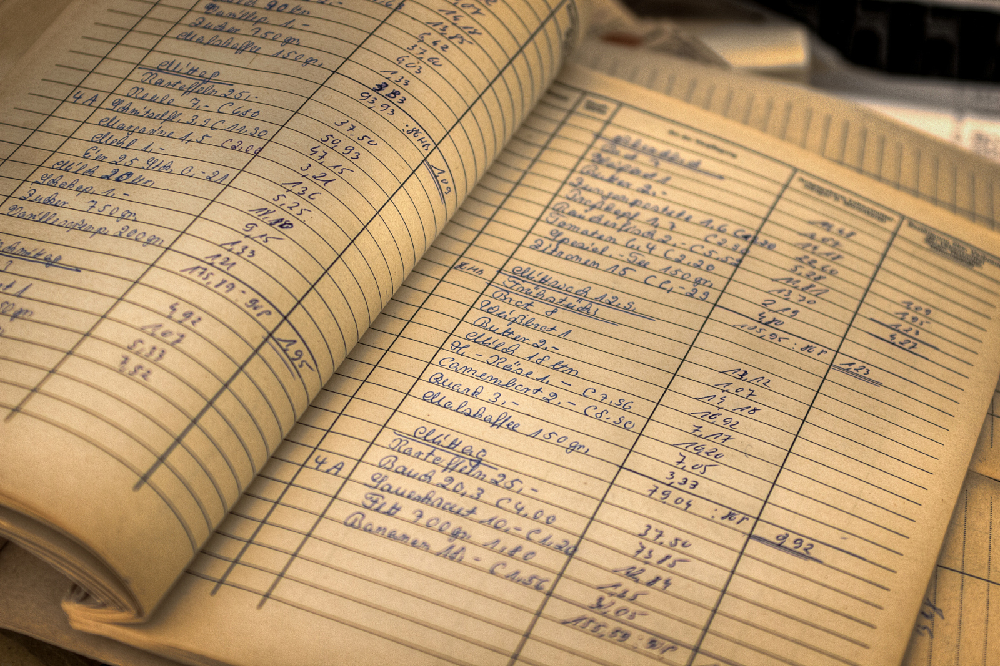

INTRODUCTION TO BOOK-KEEPING
Meaning of Book-keeping
Book-keeping is the process of recording all business transactions in a systematic and orderly manner so that the financial position of a business can be known at any time.
Every business, whether small or large, buys and sells goods, receives and spends money, and has to keep accurate records of these transactions. Book-keeping ensures that every transaction is written down correctly, using the right figures and dates, in the right books.
In simple terms: Book-keeping means keeping the record of money received and money spent by a business.
It is the foundation of accounting. Without proper book-keeping, it would be impossible to know whether a business is making profit or loss.

Importance of Book-keeping
Book-keeping is very important for every business. It helps you to do the following:
- Know the financial position of the business – It helps you to know how much the business owns and how much it owes.
- Determine profit or loss – It helps you to find out whether the business is making profit or losing money.
- Provide accurate financial information – It helps you to give correct information about the business to owners, government, banks, and investors.
- Aid decision-making – It helps you to make wise decisions on how to spend, save, or invest money.
- Prevent fraud and mistakes – When transactions are recorded properly, it becomes easier to detect errors and prevent stealing or mismanagement.
- Assist in tax calculation – It helps you to know the actual income of the business so that the correct amount of tax can be paid.
- Provide evidence of transactions – Written records serve as proof whenever there is any misunderstanding or dispute about payment or delivery of goods.
- Help in business planning – It helps you to plan for the future by showing which areas of the business are doing well or not.
Qualities of a Good Book-keeper
The person who keeps financial records for a business is called a book-keeper. For book-keeping to be effective, the book-keeper must have certain good qualities.
- Honesty and truthfulness – The book-keeper must always tell the truth and record figures exactly as they are, without changing them.
- Hard-working and careful – The person must be ready to work diligently and double-check entries for accuracy.
- Neatness and orderliness – The record books must be kept clean, neat, and well arranged for easy reference.
- Good memory – The book-keeper should be able to remember details of transactions until they are recorded.
- Trustworthiness – Since the job involves handling money and important information, the person must be reliable.
- Legible handwriting – If the record is written manually, the handwriting should be clear and easy to read.
- Confidentiality – The book-keeper must not disclose the business financial information to outsiders without permission.
Common Book-keeping Practices
Certain practices are followed in order to keep proper financial records. They include:
- Daily recording of transactions – Every business transaction, whether cash or credit, must be recorded on the day it happens.
- Use of source documents – Transactions should be supported with documents such as receipts, invoices, bills, and vouchers.
- Keeping books of original entry – Records are first written in journals such as the cash book, sales day book, purchases day book, and general journal.
- Posting to the ledger – Entries from the books of original entry are transferred into the ledger, where each account is properly recorded.
- Balancing of accounts – The totals of accounts are checked regularly to find out who owes the business or whom the business owes.
- Preparation of financial statements – At the end of a period, statements such as the trading account, profit and loss account, and balance sheet are prepared.
- Checking and correction of errors – The records are reviewed to detect mistakes or missing entries.
- Proper filing and storage – Books and documents must be arranged properly so that they can be found easily when needed.
Differences Between Book-keeping and Accounting
| Book-keeping |
Accounting |
| It involves recording daily business transactions. |
It involves summarizing, interpreting, and reporting financial information. |
| It is the foundation or beginning stage of accounting. |
It is the higher or advanced stage that uses book-keeping records. |
| It is usually done by a book-keeper. |
It is usually done by an accountant. |
| It focuses mainly on accuracy and completeness of records. |
It focuses on analyzing and using the records for decision-making. |
Example of Book-keeping for a Small Business
Example: Cash Book of a Small Grocery Shop (October 2025)
| Date |
Details |
Receipts (Money In) |
Payments (Money Out) |
Balance |
| 01/10/2025 |
Cash from sales |
5000 |
- |
5000 |
| 02/10/2025 |
Bought goods |
- |
2000 |
3000 |
| 03/10/2025 |
Cash from sales |
4000 |
- |
7000 |
| 04/10/2025 |
Paid rent |
- |
1500 |
5500 |
| 05/10/2025 |
Cash from sales |
3000 |
- |
8500 |
Explanation:
Every transaction is recorded with date, details, amount received, amount paid, and the remaining balance.
This record is a basic example of book-keeping, specifically a cash book.
Later, these records can be used in accounting to prepare profit and loss statements and financial reports.
Summary
- Book-keeping is the systematic recording of all financial transactions of a business.
- It helps you to know whether a business is making profit or loss and to make informed financial decisions.
- A good book-keeper must be honest, hardworking, neat, trustworthy, and careful.
- Proper book-keeping involves daily recording of transactions, using source documents, keeping ledgers, and preparing financial statements.
- Book-keeping is different from accounting, but it serves as its foundation.
Revision Questions
- What is book-keeping?
- State five importance of book-keeping.
- Mention four qualities of a good book-keeper.
- List four common book-keeping practices.
- Explain two differences between book-keeping and accounting.